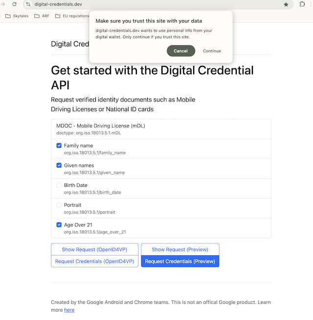

Topic F - Digital Credentials API
Version 1.3, updated 6 November 2025
1. Introduction
1.1 Discussion Paper topic description
This document is the Discussion Paper for the European Digital Identity Cooperation Group regarding Topic F: Digital Credentials API (formerly known as 'the browser API').
The ARF Development Plan [ARF_DevPlan] describes this Topic as follows:
Define high-level requirements for the interface between the wallet and browsers and/or the operating system. These requirements are currently under discussion and being standardised through the Digital Credentials API by W3C. The protocols to be used with this API, including message structures and contents, are being standardised by ISO and the OpenID Foundation.
1.2 Related risks in the Risk Register
The risk register for European Digital Identity Wallets [RiskRegister] contains the following risks that are related to the use of the Digital Credentials API:
| Risk type | Risk id | Related risk titles |
|---|---|---|
| High-level risks to the wallets | R5 | Data theft |
| High-level risks to the wallets | R6 | Data disclosure |
| High-level risks to the wallets | R9 | Unauthorised transaction |
| High-level risks to the wallets | R10 | Transaction manipulation |
| High-level risks to the wallets | R13 | Service disruption |
| High-level risks to the wallets | R14 | Surveillance |
| System-related risks | SR3 | Legal non-compliance |
| R5 Data theft |
|---|
| Data theft is defined as the unauthorised extraction of data. Data theft is also associated with threats, such as data interception (unauthorised capture of data in transit) and data decryption (unauthorised decoding of encrypted data), which are likely to lead in some cases to Data disclosure (R6). |
| R6 Data disclosure |
|---|
| Data disclosure is defined as the unauthorised exposure of personal data including special categories of personal data. The privacy breach risk is very similar when considered from a privacy rather than security viewpoint. |
| R9 Unauthorised transaction |
|---|
| Unauthorised transactions are defined as operational activities conducted without the permission or knowledge of the wallet user. In many cases, an unauthorised transaction can lead to Identity theft (R4) or Data disclosure (R6). It is also related to unauthorised transactions, such as the misuse of cryptographic keys. |
| R10 Transaction manipulation |
|---|
| Transaction manipulation is defined as the unauthorised alteration of operations in the wallet. Transaction manipulation is an attack on integrity, and it is related to a data integrity breach. |
| R13 Service disruption |
|---|
| Service disruption is defined as an interruption or degradation in the normal operation of the wallet. A specific kind of service disruption is user lock-out, defined as the inability of a user to access their account or their wallet. |
| R14 Surveillance |
|---|
| Surveillance, or monitoring, is defined as the unauthorised tracking or observation of a wallet user's activities, communication, or data. Surveillance is often related to inference, which is defined as the deduction of sensitive or personal information from seemingly innocuous data. |
| SR3 Legal non-compliance |
|---|
| Legal non-compliance is defined as a situation when relevant laws, regulations or standards cannot be adhered to. In the context of the wallet, as security and privacy of the solution are legal requirements, all threats are likely to lead to some kind of legal non-compliance. |
More specifically, [RiskRegister] describes the following threats to a Wallet:
| ID | Threat description | Related risks |
|---|---|---|
| TR25 | The wallet can present attributes to a relying party without the approval of a user. | Data disclosure (R6) |
| TR28 | An attacker can get a user into wrongfully approving a request for electronic attestations of attributes (phishing or other). | Data disclosure (R6) |
| TR29 | An attacker can leak attributes from the wallet and identify the wallet user where identification is not required/allowed. | Data disclosure (R6) |
| TR31 | A request can be leaked to an attacker. | Data disclosure (R6) |
| TR34 | An attacker can know whether a wallet is installed on the same device he is using, or on another one, and get information on it. | Data disclosure (R6) |
| TR50 | An attacker can eavesdrop during the connection from the wallet to relying parties. | Data theft (R5) / Data disclosure (R6) |
| TR50 | An attacker can convince a user to share personal data (i.e. PID, EAA-s, pseudonyms, electronic signatures, logs and other data) with the attacker or with a third party that the user did not intend to do so. | Data theft (R5) / Data disclosure (R6) |
| TR76 | A relying party can send multiple invalid requests. | Service disruption (R13) |
| TR80 | An attacker can block transactions by relying parties, users and/or PID provider. | Service disruption (R13) |
| TR88 | Attackers can make changes to a request's metadata (service name, usages, etc.). | Transaction manipulation (R10) |
| TR93 | An attacker can replace or modify the PID during its transfer from the wallet unit to the online relying party. | Transaction manipulation (R10) |
| TR103 | The user behind the relying party - browser connection can be different from the user behind the relying party - wallet connection. | Unauthorised transaction (R9) / Data disclosure (R6) / Identity theft (R4) |
| TR105 | An attacker can perform man-in-the-middle attacks | Unauthorised transaction (R9) / Data disclosure (R6) / Surveillance (R14) |
1.3 Key words
This document uses the capitalised key words 'SHALL', 'SHOULD' and 'MAY' as specified in RFC 2119, i.e., to indicate requirements, recommendations and options specified in this document.
In addition, 'must' (non-capitalised) is used to indicate an external constraint, for instance a self-evident necessity or a requirement that is mandated by an external document. The word 'can' indicates a capability, whereas other words, such as 'will' and 'is' or 'are' are intended as statements of fact.
1.4 Document structure
This document is structured as follows:
- Chapter 2 introduces the Digital Credentials API
- Chapter 3 presents the functionality expected from the Digital Credentials API so it can be used in the context of the EUDI Wallet ecosystem.
- Chapter 4 presents the functionality expected by the underlying connectivity layer
- Chapter 5 lists the additions and changes that will be made to the ARF as a result of discussing this topic with Member States.
- Added is chapter 6, addressing FAQ about the Digital Credentials API.
- Chapter 7 lists the references.
2. Digital Credentials API
2.1 Overview
Problem Statement
Remote transaction flows are use cases in which the Relying Party Instance is remote from the User and the User device. The Relying Party Instance accesses the Wallet Instance over the internet, using a browser. These use cases can be further distinguished in same-device flows, in which the browser is running on the same device as the Wallet Unit, and cross-device flows, where the browser is on a different device.
Remote presentation flows come with a number of challenges:
- 1. Secure Cross-Device Flows: Cross-device flows are vulnerable to phishing and relay attacks, necessitating enhanced security measures.
- 2. Wallet Unit Selection and Invocation: In remote flows, where interactions do not originate from the Wallet Unit, Users may encounter difficulties in selecting and invoking the appropriate Wallet Instance to fulfil a specific presentation request, particularly when multiple Wallet Units are present on the device.
- 3. Invocation Mechanism: Establishing a communication channel between the Wallet Unit and the remote Relying Party Instance presents challenges due to inconsistent invocation methods. One approach considered by standardization bodies involves using custom URI schemes, such as "mdoc://" or "openid4vp://". In this approach, the operating system would trigger the Wallet Unit when the Relying Party Instance requests a connection via a custom URI. However, relying on custom URI schemes introduces variability in user experiences across different browsers and operating systems, leading to operational inefficiencies and potential security risks.
- 4. Clear Origin Verification: Protecting against relay attacks requires precise identification of the Relying Party Instance's origin.
- 5. Session binding: When presenting a PID or attestation to a remote Relying Party, users have to switch contexts. Existing protocols may enable attacks where the contexts are not "bound" to each other resulting in session "hijacking".
Proposed solution
Digital Credentials API [Cred_API] is a possible solution to the identified challenges. Digital Credentials API has the potential to enhance usability, scalability, and security while providing a consistent and reliable user experience.
Digital Credentials API is a Draft Community Group report of the Web Platform Incubator Community Group (WICG) that builds upon Credential Management Level 1 API W3C Working Draft [Cred_Man]. The goal of the Digital Credentials API is to enable user agents (i.e., browsers) to mediate issuance, access, and presentation of attestations. The Digital Credentials API can be used, for example, by a Relying Party website to request a PID or (Q)EAA stored in a Wallet Unit through the User's browser. The browser and the Wallet Unit may be in the same device (same-device flow) or in separate devices but in proximity (cross-device flow).
The Digital Credentials API can address the challenges related to remote presentation flows as follows:
- 1. Secure Cross-Device Flows: The Digital Credentials API enables a secure transport with proximity checks for cross-device requests
- 2. Wallet Unit Selection and Invocation: The Digital Credentials API enables a unified interface provided by the web browser and the operating system, which can streamline this process, offering a seamless and intuitive user experience.
- 3. Invocation Mechanism: The Digital Credentials API does not need custom URL schemes for invoking a Wallet Unit.
- 4. Clear Origin Verification: The Digital Credentials API enables including the origin information, such as the website domain or app package name, within the presentation request ensuring the authenticity of the request and enhancing trust for both Wallet Units and Users.
- 5. Session binding: The Digital Credentials API allows information about a session to be embedded in a presentation request. At the same time the browser and the operating system handles context switching preventing session hijacking.
2.2 Relying Party - Wallet Unit interaction
Using the Digital Credentials API, a Relying Party can interact with a Wallet Unit using a website and through a browser.
The current version of Digital Credentials API extends Credential Management
Level 1 API (the same API used by WebAuthn/passkeys) to allow websites to request
an attestation. This is achieved by providing a sequence of presentation
requests, where each presentation request includes an exchange protocol and
request data. The format of the request data are specific to the exchange
protocol. The Digital Credentials API specifications will include a registry of
supported protocols.
As a next step, the browser sends the request to the operating system which searches for matching attestations in installed Wallet Units. The cross-device flow can be used to search for matching attestations in Wallet Units installed in a different device, located in close proximity to the browser. If more than one matching attestation is found, the browser prompts the User to select one. As a next step, request data is sent to the corresponding Wallet Unit. Then, the Wallet Unit asks user consent and generates a presentation based on the selected exchange protocol. The presentation is relayed back to the Relying Party's website.
As of October 2025, attestation presentation using the DC API is supported by Chrome, Safari, and Edge (with a feature flag enabled). Attestation issuance is available as an experimental feature in Chrome and Edge. However, DC API implementations differ across browsers. Chrome and Edge are agnostic to the attestation format and presentation protocol. Safari, on the other hand, supports only the mdoc request profile as defined in ISO/IEC 18013-7 Annex C.
2.2.1 Attestation matching
Mobile operating systems handle attestation matching differently. In Android, a Wallet must provide a "matcher", which is Wallet-specific code executed in a sandboxed environment and responsible for matching DC API requests to Wallet Instances. Android provides a sample matcher that has to be configured with the attestation types and attributes of all credentials in a Wallet Instance, although alternative matcher implementations can be used. In iOS, Wallet Units register supported attestation types with the operating system.
It is highlighted that the method used by the operating system to match credential requests to attestations is out of scope of the DC API specification.
2.2.2 Same-device flow
The same-device flow can be implemented using the following steps (the example screenshots shown are based on the Chrome browser):
- The User visits the website of the Relying Party and indicates that they want to present some attributes from installed Wallet Units.
- The browser asks permission from the User to allow Digital Credentials API
invocation from this particular website.

- The Relying Party indicates to the browser which attributes they want to
request by creating a
presentation request. - The operating system searches for attestations that satisfy the requested attributes.
- The browser presents to the User a selector that includes a list of
potentially suitable attestations.

- The User selects an attestation. The operating system invokes the Wallet Unit providing as input the selected attestation and the request data.
- The Wallet Unit processes the request according to the relevant specification (e.g., OpenID4VP) and returns the requested attributes through the browser, provided that the Wallet Unit contains the attributes, all required verifications pass and the User consents.
2.2.3 Cross-device flow
The cross-device flow can be implemented using the following steps (the example screenshots shown are based on the Chrome browser):
- The User visits the website of the Relying Party and indicates that they want to present some attributes from installed Wallet Units.
- The browser asks permission from the User to allow Digital Credentials API invocation from this particular website. 
- The Relying Party indicates to the browser which attributes they want to
request by creating a
presentation request. - Using a cross-device protocol (see section 2.3) the presentation request is transferred from the browser to the User device
- The device operating system presents to the User a selector that includes a list of potentially suitable attestations.
2.3 Cross-device protocols
The protocol used for communication between a browser and a (remote) User device is out of scope of the DC API specification. Current implementations rely on the CTAP 2.2 hybrid flow, as described in section 11.5 of [Ctap]. This flow establishes a secure "tunnel" between the browser and the User device, which is then used to exchange the credential request and the corresponding response.
In more detail:
- The browser displays a QR code containing information about the tunnel
endpoint and cryptographic keys used to establish a secure session. Suitable
tunnel endpoints are currently defined in [Ctap]. As of October 2025, two
endpoints are defined:
cable.ua5v.com, operated by Google, andcable.auth.com, operated by Apple. - The User scans the QR code using the device's camera.
- The device emits a BLE advertisement, which is received by the browser. This advertisement includes encrypted data required to establish the tunnel and also serves as a proximity check.
- A secure tunnel is established.

- The presentation request is transmitted through the tunnel to the device's operating system.
- The device operating system displays a selector to the user with a list of potentially suitable attestations.

3. Expectations from the Digital Credentials API
Sections 3.1 to 3.6 present the functionalities and principles expected from the Digital Credentials API so it can be used in the context of the EUDI Wallet ecosystem.
3.1 Expected functionality
-
Wallet Selection and Invocation for attestation presentation: The Digital Credentials API should enable a browser or OS to search for Wallet Units containing attestations that potentially match the request of the Relying Party, addressing user experience and scaling concerns caused by custom URI-based or universal link (a.k.a. app link)-based approaches.
-
Wallet Selection and Invocation for attestation issuance: The Digital Credentials API should enable a browser or OS to search for Wallet Units that can handle an attestation offer from a specific Attestation Provider, addressing user experience and scaling concerns caused by custom URI-based or universal link (a.k.a. app link)-based approaches.
-
Secure Cross-Device Flows: The Digital Credentials API should enable APIs and protocols (e.g., CTAP2) that ensure secure cross-device engagement, mitigating threats such as phishing and relay attacks.
-
Protocol support: The Digital Credentials API shall support the protocols specified in the Implementing Acts as remote presentation protocols for attestations and attestation issuance.
3.2 Responsibilities
The Digital Credentials API should operate as a secure transport layer, allowing all parties to fulfil their requirements as specified in Annex 2 of the ARF. Browsers and operating systems facilitating remote transaction flows should not act on behalf of Attestation Providers, Relying Parties, or Wallet Units. Particularly:
-
Consent: Wallet Units and Relying Parties should handle user consent for attribute requests and presentations. The Digital Credentials API should not add an additional consent layer to the workflow for presenting attributes stored in a Wallet Unit.
-
Relying Party Authentication: Wallets Units are responsible for authenticating Relying Parties before delivering attribute payloads. The Digital Credentials API should provide sufficient information to Wallet Units about the presentation request origin and other necessary context information, allowing Wallet Units to identify and authenticate Relying Parties, as well as to verify that the request from the Relying Party was not copied and replayed.
-
Attestation Provider and Relying Party Authorisation: Although browsers and operating systems implementing the Digital Credentials API should verify the web origin of Attestation Providers and Relying Parties, as well as that the credential offers and presentation requests are transferred over TLS from the Attestation Provider or the Relying Party to the browser, they should not decide which Attestation Providers or Relying Parties are authorised to issue attestations or request attributes as this responsibility lies with national issuers and regulators, including Relying Party registrars.
-
Wallet Unit sovereignty. When the Digital Credentials API is used, the operating system should not override or remove control from the Wallet Unit. The User's Wallet Unit should retain full authority over attestation management, including issuance, storage, and presentation. This ensures that the Wallet Unit remains the trusted component for safeguarding user data and interactions. The operating system and browser should not disrupt the Wallet Unit's security functions.
3.3 Technological Neutrality and Cross-Platform Interoperability
The Digital Credentials API shall preserve technological neutrality and avoid any reliance on vendor-specific extensions. Browsers and operating systems (i.e., DC API implementers) shall not restrict or prefer specific presentation protocols, credential formats, or attestation types. DC API implementations shall not block, gate, or degrade any standards-conformant option. In the EU context: protocols and formats are mandated by regulation while attestation types could be many and some of them will be described by a catalog published by the commission.
Particularly:
-
Neutrality of formats, protocols, and attestation types The Digital Credentials API must remain neutral toward presentation protocols, credential formats, and attestation types. If a "Registry of Protocols for Requesting Digital Credentials" is used, additions and removals must follow transparent, objective, and non-discriminatory criteria under multi-stakeholder governance, with published processes, versioning/deprecation policies, and an appeal path.
-
Cross-platform compatibility and interoperability The API should be consistently implementable across major browsers and operating systems, with conformance tests that ensure equivalent behaviour and no single-vendor dependencies. Users and relying parties must not be locked into any specific platform.
-
Wallet Solution neutrality Any EUDI Wallet Solution (i.e., meeting EU conformance/certification) must be able to use the API without additional vendor vetting or platform-imposed constraints beyond EUDI Regulation and related implementing acts. Platforms must not block, gate, throttle, or discriminate against compliant wallets and must expose the necessary capabilities via documented, non-discriminatory APIs.
3.4 Privacy
The use of the Digital Credentials API should not compromise User privacy. In more detail:
-
Privacy preserving attestation relay: The use of a browser as an intermediary in the attestation issuance and presentation process should not create privacy risks, such as those arising from malicious add-ons or unauthorised tracking mechanisms. Browsers should maintain strict privacy controls to ensure attestation-related data is neither exposed nor accessible to unauthorised third parties. This principle also extends to any tunnelling services used to facilitate cross-device flow.
-
Protection against data theft: Browsers and operating systems providing support for the Digital Credentials API should minimise the threat of data theft and disclosure through eavesdropping on the communication between the Wallet Unit and the Attestation Provider or Relying Party's website.
3.5 Availability
The use of the Digital Credentials API should not enable Denial-of-Service attacks against Wallet Units. Particularly:
- DoS protection. The use of the Digital Credentials API should not facilitate Attestation Provider or Relying Parties to perform Denial of Service attacks against Wallet Units, e.g., by enabling an Attestation Provider or Relying Party to send multiple invalid requests. Similarly, the use of the Digital Credentials API should not enable attackers to block transactions by Relying Parties and Wallet Units.
3.6 Implementation requirements
DC API deployments rely on an attestation matching mechanism (see Section 2.2.1). Member States have raised concerns that browsers and operating systems, when handling DC-API discovery/requests, could infer personal information by observing or registering attestation types and attribute names (e.g., a "DisabilityCertificate", "ProfessionalLicense:Doctor", or "AgeOver18"). Even without disclosing values, these signals can enable profiling, or cross-service tracking by the platform.
- Privacy-preserving matching: Wallet Units may need to indicate the availability of attestations to the Digital Credentials API framework to support their discovery and use. This process must be designed in a way that does not compromise user privacy. The operating system should have access only to the minimum information necessary to perform the matching functionality and must ensure that no third party can access this data. The overall matching mechanism SHALL be aligned in accordance with the applicable EU data protection regulations.
4. Implementation of underlying CTAP protocol
Digital Credentials API deployments rely on a cross-device communication protocol (see Section 2.3), which is out of the scope of the DC API specification, but nevertheless introduces privacy and availability concerns.
-
Preferences Browsers and operating systems shall use short-range CTAP transport bindings (e.g., over USB, NFC, or BLE) to transfer CTAP2 messages. Implementations shall additionally support Hybrid transport binding and apply policy-based selection with graceful fallback between short-range and hybrid transport bindings. The active transport binding and any switch-over must be clearly signalled to the user.
-
Support for alternative tunnel endpoints The CTAP Hybrid flow specification should be extended to support tunnel endpoints that are regulated under EU legislation and supervised by EU authorities. Such endpoints SHALL be supported by corresponding browsers and operating systems.
5. Additions and changes to the ARF
5.1 High-Level Requirements to be added to Annex 2
The following High-Level Requirements will be added to Annex 2 of the ARF:
OIA_08d
If a Wallet Unit supports the [W3C Digital Credentials API], it SHALL provide a global user setting to disable the disclosure of stored attestations via the Digital Credentials API framework, as described in OIA_08b. When this setting is disabled, the Wallet Unit SHALL NOT advertise or respond to DC API presentation/issuance requests.
OIA_08e
If a Wallet Unit supports the [W3C Digital Credentials API], it SHALL use the CTAP-Hybrid flow only if the expectations outlined in Chapter 4 of the Topic F discussion paper are met.
5.2 High-Level Requirements to be changed
OIA_08
Wallet Units and Relying Party Instances ~~SHOULD~~ SHALL support the [W3C Digital Credentials API]](https://wicg.github.io/digital-credentials/) for remote presentation flows, provided that: a) this API is a W3C recommendation, b) this API complies with the expectations outlined in Chapter 3 of the Topic F discussion paper, and c) this API is broadly supported by relevant browsers and operating systems.
OIA_08b
If a Wallet Unit supports the [W3C Digital Credentials API], it SHALL, by default, disclose the presence of all stored attestations' type to the Digital Credentials API framework, but it SHALL NOT disclose the attributes and their values in these attestations. Note: The latter restriction applies even if such disclosure would enhance the services provided by the operating system to the Wallet Unit, for example, attestation selection in the context of the Digital Credentials API.
OIA_08c
If a Relying Party supports the [W3C Digital Credentials API], the Relying Party's presentation request MAY be processed by the browser and/or the Operating System for searching available attestations, for preventing fraud targeting the user, or for troubleshooting purposes. Moreover, the request SHOULD be processed by the browser and/or the Operating System for User security purposes. However, the request SHALL NOT be processed by the browser and/or the Operating System for market analysis purposes (including as a secondary purpose) or for the browser's and/or the Operating System's own purposes
PAD_05
If a Wallet Unit supports the [W3C Digital Credentials API] and it deletes on the User's request a PID or attestation previously disclosed to the Digital Credentials API framework, the Wallet Instance SHALL disclose the fact that it no longer stores this PID or attestation to the Digital Credentials API framework.
WIAM_13a
If a Wallet Unit supports the [W3C Digital Credentials API] and the User uninstalls the Wallet Unit, the Wallet Unit SHALL disclose the fact that it no longer stores any previously disclosed PID(s) or attestation(s) to the Digital Credentials API framework.
6 Frequently Asked Questions about the Digital Credentials API
This FAQ explains the W3C Digital Credentials API (DC API) in plain terms—what it is, why it matters, and how it fits alongside existing open protocols and profiles (e.g., OpenID4VP, ISO 18013-7, ETSI). It is written for policy, product, and engineering audiences and aims to be neutral: it does not endorse any vendor, protocol, or format.
A. What is the W3C Digital Credentials API?
It's a Web API that lets wallets present and relying parties request and (optionally) issue digital credentials (e.g., ID cards, driving licenses, diplomas) via the browser (user agent). It's protocol- and format-agnostic and builds on Credential Management Level 1.
B. What problem does it solve?
It replaces ad-hoc deep links and custom schemes with a standard, browser-mediated flow so sites can request credentials, users can choose a wallet and consent, and results return in the same tab-consistently and with stronger privacy.
- Safer invocation: The browser only opens a wallet after explicit user confirmation, using clear context about who is asking and what is requested.
- Phishing resistance: The wallet receives the authenticated website origin from the user agent, making origin spoofing harder.
- Better UX: The user never "falls out" into opaque app hops; the session returns to the original tab whether fulfilled or aborted.
- Cross-device hardening: When a phone and desktop are involved, the OS can enforce proximity-checked secure transport (e.g., CTAP 2.2 hybrid) under the hood.
- Lower integration drift: A single web surface for sites and wallets reduces bespoke glue code and privacy pitfalls of raw URL schemes.
C. Is it a W3C Standard yet?
It's a W3C Working Draft (latest from 11 Oct 2025) on the Recommendation track, work-in-progress and evolving.
D. What about OpenID for Verifiable Presentations (OpenID4VP)?
They're complementary. OpenID4VP defines a protocol; the Digital Credentials API can carry OpenID4VP messages instead of traditional HTTPS redirects.
E. Does it lock you into one protocol or format?
No. The spec is protocol- and format-agnostic and maintains a registry of protocols so multiple ecosystems (e.g., ISO mDL flows, OpenID4VP, etc.) can work through one browser interface.
F. How is privacy handled?
The browser intermediates requests (e.g., a credential chooser), requires readable requests (so it can protect users), and mandates features like response encryption. The specification discusses selective disclosure, unlinkability, and verifier authorisation considerations.
G. Who are the main actors?
Same as EUDI ecosystem: Attestation Provider -> EUDI Wallet -> Relying Party. The user agent mediates between the site (relying party/attestation provider) and the wallet, enforcing UI/permission and transport requirements.
H. Does it also support issuing attestations and PID, not just presenting them?
Yes. The API includes flows to request issuance, including cross-origin issuance via Permissions Policy (digital-credentials-create).
I. What's the browser support today for Presentation?
| Chrome | Safari/Webkit | Edge | Firefox | |
|---|---|---|---|---|
| Android | Supported | - | Work in progress | - |
| iOS / iPadOS | Supported | Supported | Supported | Supported |
| Windows | Supported | - | - | - |
| MacOS | Supported | - | Supported | - |
| Ubuntu | Supported | - | - | - |
Table for support on Presentation (expected rapid changes, as the draft evolves)
J. What's the browser support today for Issuance?
| Chrome | Safari/Webkit | Edge | Firefox | |
|---|---|---|---|---|
| Android | Work in progress | - | Work in progress | - |
| iOS / iPadOS | - | - | - | - |
| Windows | Work in progress | - | - | - |
| MacOS | Work in progress | - | Work in progress | - |
| Ubuntu | Work in progress | - | - | - |
Table for support on Issuance (expected rapid changes, as draft evolves)
K. Is it relevant for the EUDI Wallet ecosystem?
Yes, some EUDI discussions profile the Digital Credentials API alongside OpenID4VP and ISO 18013-7 remote flows, treating it as a secure transport/mediation layer (with strong verifier authentication expectations).
L. How does the API support cross-device (phone-to-desktop) flows, and where does CTAP 2.0/2.2 fit?
In a cross-device flow, the desktop site invokes the Digital Credentials API and shows a QR code. You scan it with your phone (where your wallet lives). The browser/OS establishes a secure, phishing-resistant channel between desktop and phone with a proximity check, on Chrome this uses the FIDO CTAP protocol (Bluetooth for proximity), then the wallet asks for consent and returns an encrypted credential response back to the site. CTAP's role here is the device-to-device pairing and proximity assurance; it does not carry your personal data, the credential payload itself travels via the chosen presentation protocol (e.g., OpenID4VP/JWE or ISO 18013-7/HPKE). Apple documents a similar cross-platform model and explicitly references FIDO CTAP for these flows. The W3C spec stays protocol-agnostic and notes that the details of cross-device transports are handled by platform implementations and underlying cross-device protocols.
M. Can the company running the CTAP tunnel read my data?
No, the CTAP hybrid (caBLE) tunnel is end-to-end encrypted between your
desktop/browser ("client platform") and your phone's authenticator/wallet. After
the WebSocket is established (wss://.../cable/connect/<routing-id>/<tunnel-id>
or /cable/contact/<contact-id>), the two devices perform a Noise-based
cryptographic handshake (KNpsk0/NKpsk0 with P-256, SHA-256, AES-GCM) and then
exchange only encrypted CTAP frames. The tunnel service routes packets but
cannot decrypt CTAP contents.
Separately, in DC API deployments the credential response itself is additionally encrypted end-to-end for the requesting website (e.g., JWE/HPKE in OpenID4VP or ISO mDL profiles). That means neither the tunnel operator nor the browser can read the returned attributes, only the verifier's backend holding the private key can.
What the tunnel can still see is limited metadata (it terminates wss, knows the tunnel/contact ID it's routing, and can observe timing/size), but not the CTAP payload or your credential data.
N. What's the basic difference between using a DC API or custom scheme?
- DC API: A browser-mediated Web API for requesting/presenting/issuing credentials. The user agent parses the request, the platform/ wallet shows consent UI, and returns results back to the site. It's format/protocol-agnostic and designed with privacy & security considerations.
- Custom scheme: The site launches a wallet app via a URI like
mywallet://...(or QR). Data returns via another app launch/redirect. No standardized mediation by the browser.
O. Wallet discovery and invocation, who's in control?
- DC API: The browser and the operating system controls wallet discovery/selection and applies permissions and origin checks, yielding more consistent UX and policy enforcement.
- Custom scheme: Any app can register the same scheme, so links can be hijacked/mis-routed unless you move to verified mechanisms (iOS Universal Links, Android App Links).
P. Security risks to watch out for?
- DC API: Benefits from the browser's security model (same-origin, permissions, dedicated privacy section in the spec). Cross-device transports can add phishing-resistance (handled by the platform), while the response is encrypted for the verifier.
- Custom scheme: Documented risks include scheme hijacking, confusing redirects, and easier relay/phishing in cross-device QR flows if you don't add proximity or strong channel binding. Industry guidance recommends using the browser (external user agent) instead of app-to-app redirects where possible.
Q. Privacy implications?
- DC API: The request must be readable by the browser (to protect the user), and specs emphasize data minimization and consent UI; returned attributes are end-to-end encrypted to the verifier.
- Custom scheme: Requests often travel in URIs; careless designs can leak data via logs or be intercepted by the wrong app. (Use verified links and keep PII out of URLs.)
R. Cross-device flows (phone <-> desktop)?
- DC API: Platforms can provide proximity-bound, phishing-resistant cross-device channels under the hood while keeping the same API surface for sites.
- Custom scheme: Pure QR/app-link flows need extra controls (proximity checks, anti-relay measures). Otherwise, they're easier to phish/relay.
S. Maturity and portability?
- DC API: A W3C Working Draft, evolving and being trialled; goal is one portable browser surface across wallets/protocols.
- Custom scheme: Works everywhere today but tends toward per-wallet glue code and platform-specific hardening. See OWASP Mobile Application Security.
T. If I must use custom schemes, what are the minimum mitigations?
Use Universal Links (iOS) / App Links (Android) with domain verification, keep secrets out of URLs, and follow OAuth for Native Apps (RFC 8252): prefer the system browser (external user agent) and apply Security Considerations included in OpenID4VP or OID4VCI (e.g., FAPI2) depending on the scenario.
Bottom line
Choose DC API when you want browser-level mediation, stronger default privacy/security posture, and a unified UX. Choose custom schemes only as fallback mechanism with verified links + strict hardening, otherwise you inherit real risks (hijacking, leakage, and weaker cross-device protection).
7 References
| Reference | Description |
|---|---|
| [RiskRegister] | Annex 1 to the Commission Implementing Regulation laying down rules for the application of Regulation (EU) No 910/2014 of the European Parliament and of the Council as regards the certification of the European Digital Identity Wallets, European Commission, October 2024, draft |
| [ARF_DevPlan] | Architecture and Reference Framework Development plan 2025, European Commission, v1.0, final |
| [Cred_API] | Digital Credentials, Draft Community Group Report, 20 February 2025, available at https://w3c-fedid.github.io/digital-credentials/ |
| [Cred_Man] | Credential Management Level 1, 13 August 2024, available at https://www.w3.org/TR/credential-management-1/ |
| [Ctap] | Client to Authenticator Protocol (CTAP) Review Draft, March 21, 2023, available at https://fidoalliance.org/specs/fido-v2.2-rd-20230321/fido-client-to-authenticator-protocol-v2.2-rd-20230321.html |